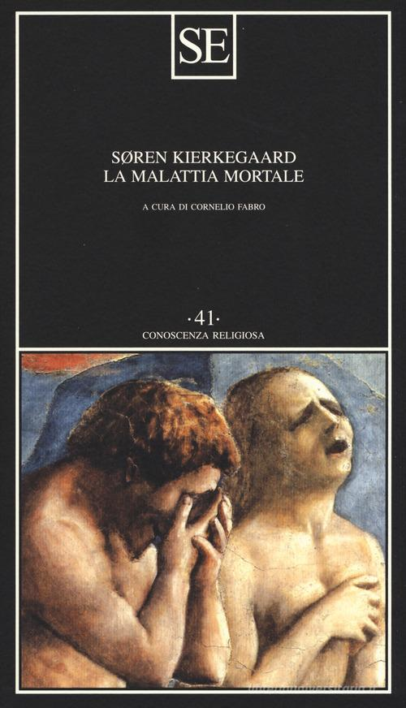

17:34 · 4 OPERE
L'homo novus della modernità.
Il filo del discorso
La lettura del quarto capitolo di L’ultima dea d’Occidente costruisce la figura dell’homo novus come esito delle categorie moderne della volontà, dell’utile e del dominio. Dr Divago la contrappone all’ideale cristiano e filosofico di una trasformazione morale della persona. Nella sua interpretazione, l’individuo che ignora la propria mortalità tende a trasformare il mondo in un campo di affermazione dell’ego. Il confronto fra sofistica e pensiero socratico-platonico espone poi l’opposizione fra persuasione e ricerca del bene. La parte centrale critica la moltiplicazione delle opinioni quando questa sostituisce l’indagine e riduce la giustizia a preferenza personale. Il riferimento alla disperazione di Kierkegaard accompagna l’immagine di un io chiuso nelle proprie proiezioni. I Discorsi duplici e il libro di Florenskij introducono due modi opposti di intendere la forza del discorso e il rapporto con la verità. Nella conclusione, l’analogia con i movimenti consentiti a un braccio meccanico esprime il timore di una libertà ridotta alle possibilità del sistema. La vita viene infine contrapposta all’ineluttabilità della morte e alla promessa di eliminarla attraverso la tecnica. È una lettura etica e filosofica della modernità, non una descrizione scientifica di una nuova specie umana o una diagnosi della popolazione contemporanea.
I libri nel discorso

Bibbia
Copertina: San Paolo, 2014 · Nuova Versione dai Testi Antichi · edizione di riferimento
La Seconda lettera di Pietro, 2,13, è indicata esplicitamente nell’epigrafe.
Passaggio 0:26 ↗ · Fonti e libro ↗
Dissoi logoi (Discorsi duplici)
Copertina: Edizioni di Storia e Letteratura · 2018 · edizione critica a cura di Stefano Maso
Copertina editoriale autentica della monografia del 2018, collana Studi di storia della filosofia antica, n. 7. Il nome Stefano Maso indica l’autore dell’apparato critico e della traduzione; l’opera antica resta anonima.
Il titolo greco dissoi logoi è pronunciato e reso come ragionamenti duplici.
Passaggio 7:57 ↗ · Fonti e libro ↗
La malattia mortale
Identificazione probabile
Copertina: SE · Conoscenza religiosa 41 · a cura di Cornelio Fabro, ristampa di riferimento
Immagine autentica dell’opera, controllata visivamente; l’edizione di riferimento non è attribuita al filmato.
La formula malattia mortale, Kierkegaard e la disperazione suggeriscono l’opera; non viene annunciata un’edizione.
Passaggio 9:54 ↗ · Fonti e libro ↗
La colonna e il fondamento della verità. Saggio di teodicea ortodossa in dodici lettere
Copertina: San Paolo · seconda edizione, ottobre 2010
Immagine autentica dell’opera, controllata visivamente; l’edizione di riferimento non è attribuita al filmato.
Florenskij e il titolo sulla colonna e il fondamento della verità sono espliciti.
Passaggio 12:53 ↗ · Fonti e libro ↗